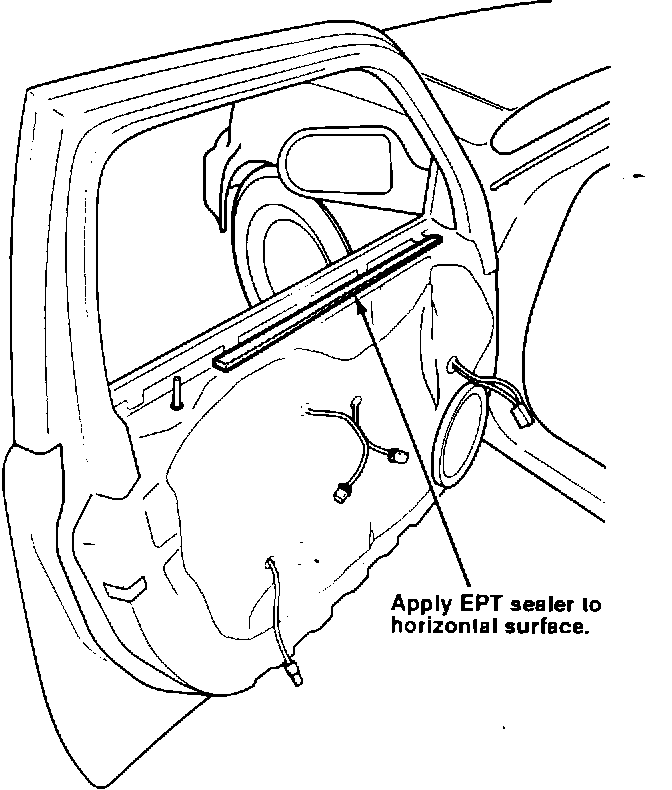

Door Panel Creak From the Inner Door Skin
DOORSymptom:
Door panel creak from the inner door skin.
Probable Cause:
The underside of the door panel rubs on the door skin when the door panel is used as an arm rest.
Corrective Action:
Remove the door panel. See section 20 of the service manual.

1. Apply a strip of 5 mm EPT Sealer to the horizontal surface of the door skin. Cover the area from the lock knob forward to the mirror triangle, as shown.
2. Reinstall the door panel.
WARRANTY INFORMATION:
Operation number: 843300
Flat rate time: 0.4 hours
Failed P/N: 67050-SP0-000ZZ
Defect code: 043
Contention code: B07